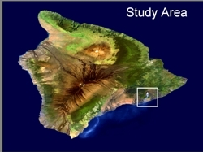
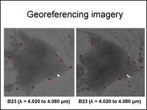
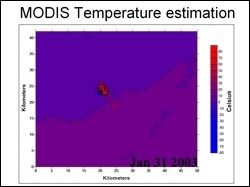

 The objective of this project was to characterize shallow subsurface temperature variations using remote sensing data. For this the study area selected was the Pu'u O'o lava field in south eastern part of the Hawaii Island. The remote sensing data source was the MODIS level 1B images acquired during the month of January over Hawaii. Data mining in itself was the initial challenge in this study, as only cloud free and radiometrically corrected data could be used for further analysis.
 Georeferencing multitemporal MODIS imagery was a second channel. Even though the level IB MODIS data is theoretically geocoded, ingest and overlaying of multitemporal imagery in ENVI showed a significant an unacceptable locational error. To correctly overlay the images for analysis, a tedious manual tie point selection method for georeferencing had to be adopted.
 Once the images were all preprocessed, temperature estimation was carried out with MODIS thermal infrared images as input. Using the well known inverse Planks equation method, temperature maps were generated for thermal images for different dates and the changes in thermal regime of the lava field were tracked. Such analysis would be aided with higher spatial resolution data in the thermal infrared region.